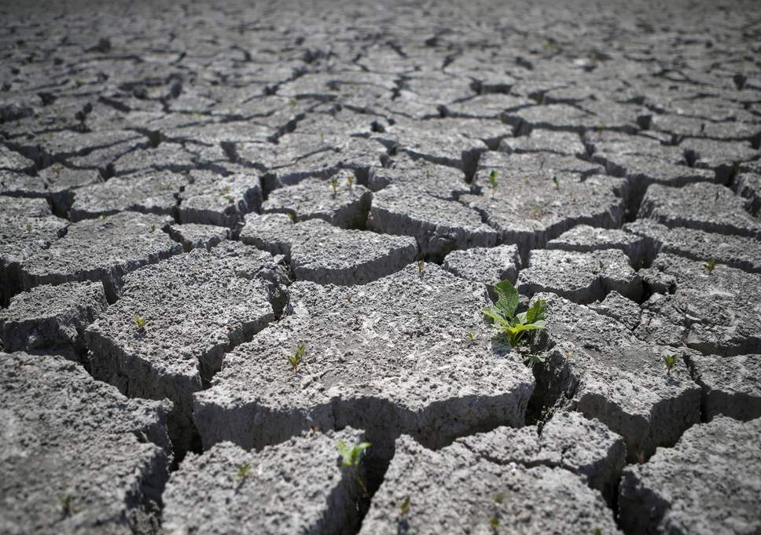
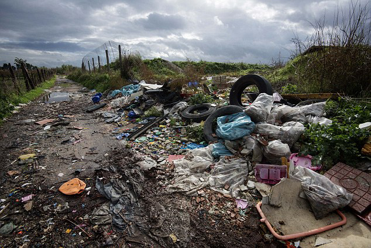
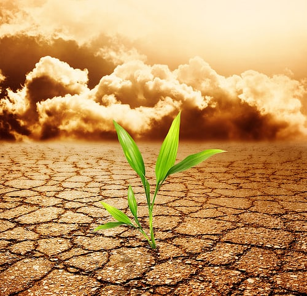

What is Land Pollution?
With the rise of concrete buildings and roads, one part of the Earth that we rarely see is the soil.
It has many different names, such as dirt, mud and ground. However, it is definitely very important to us. The plants that
feed us grow in soil and keeping it healthy is essential to maintaining a beautiful planet. However, like all other forms
of nature, soil also suffers from pollution. The pollution of soil is a common thing these days, and it happens due to the
presence of man made elements.The main reason why the soil becomes contaminated is due to the presence of man made waste.
The waste produced from nature itself such as dead plants, carcasses of animals and rotten fruits and vegetables only adds
to the fertility of the soil. However, our waste products are full of chemicals that are not originally found in nature and
lead to soil pollution.



______________________________________________________________________________________________________________________________________________________________
Main Causes of Land Pollution
1. Industrial Activity:Industrial activity has been the biggest
contributor to the problem in the last century, especially since the amount of mining and manufacturing has increased. Most
industries are dependent on extracting minerals from the Earth. Whether it is iron ore or coal, the by products are contaminated
and they are not disposed off in a manner that can be considered safe.
2. Agricultural Activities:Chemical utilization has gone up
tremendously since technology provided us with modern pesticides and fertilizers. They are full of chemicals that are
not produced in nature and cannot be broken down by it. As a result, they seep into the ground after they mix with water
and slowly reduce the fertility of the soil. Other chemicals damage the composition of the soil and make it easier to
erode by water and air.
3. Waste Disposal:Finally, a growing cause for concern
is how we dispose of our waste. While industrial waste is sure to cause contamination, there is another way in which
we are adding to the pollution. Every human produces a certain amount of personal waste products by way or urine and feces.
4. Accidental Oil Spills:Oil leaks can happen during storage
and transport of chemicals. This can be seen at most of the fuel stations. The chemicals present in the fuel deteriorates
the quality of soil and make them unsuitable for cultivation. These chemicals can enter into the groundwater through soil
and make the water undrinkable.
5. Acid Rain:Acid rain is caused when pollutants present in
the air mixes up with the rain and fall back on the ground. The polluted water could dissolve away some of the important
nutrients found in soil and change the structure of the soil.
______________________________________________________________________________________________________________________________________________________________
Effects of Land Pollution
1. Effect on Health of Humans:Considering how soil is the reason we are able
to sustain ourselves, the contamination of it has major consequences on our health. Crops and plants grown on polluted soil absorb much of the
pollution and then pass these on to us.
2. Effect on Growth of Plants:The ecological balance of any system gets
affected due to the widespread contamination of the soil. Most plants are unable to adapt when the chemistry of the soil changes so radically
in a short period of time.
3. Decreased Soil Fertility:The toxic chemicals present in the soil can
decrease soil fertility and therefore decrease in the soil yield. The contaminated soil is then used to produce fruits and vegetables which
lacks quality nutrients and may contain some poisonous substance to cause serious health problems in people consuming them.
4. Toxic Dust:The emission of toxic and foul gases from landfills pollutes
the environment and causes serious effects on health of some people. The unpleasant smell causes inconvenience to other people.
5. Changes in Soil Structure:The death of many soil organisms (e.g. earthworms)
in the soil can lead to alteration in soil structure. Apart from that, it could also force other predators to move to other places in search of food.
______________________________________________________________________________________________________________________________________________________________
Solutions of Land Pollution
1. Make people aware about the concept of Reduce, Recycle and Reuse.
2. Reduce the use of pesticides and fertilizers in agricultural activities.
4. Ensure that you do not litter on the ground and do proper disposal of garbage.
5. Buy biodegradable products.
6. Do Organic gardening and eat organic food that will be grown without the use of pesticides.
7. Create dumping ground away from residential areas, etc.
Several creatures survive under the land too. Disrupting the harmony of the land, is disrupting their habitat.
This has led to several creatures reaching the endangered status like the Gilbert’s Potoroo in Australia.
We walk and survive on land. It is literally the base of our ecosystem. It is in our good interest to take care of it and nurture it.
Go To Main Page